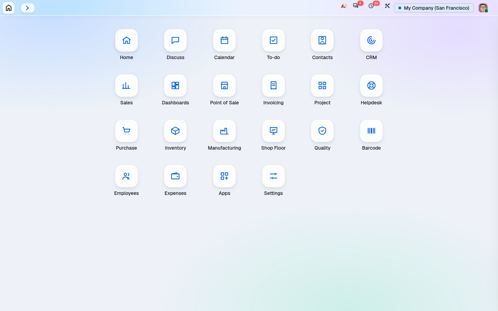

Your brand, always readable.
Pick a palette or take it from the logo; every text is tuned until it reads.
Colours from your logo, contrast-checked roles and dark mode, for the EOD look.
Odoo 20 · Community and Enterprise · comes with EOD - Backend Theme and works only together with it
On its own this module changes nothing: it is the engine a look such as EOD runs on. It keeps the company palette (house colours, your logo's colours or your own), checks every colour for WCAG AA in light and dark, and redraws the app icons as clean line icons.
Pick a palette or take it from the logo; every text is tuned until it reads.
Line icons in your action colour across the app grid, the top bar and Home.

This module is included with EOD - Backend Theme: one purchase gives you the EOD look, Workspace, Home and Focus, and Share on WhatsApp, and installing it sets them all up. On its own this module does nothing.